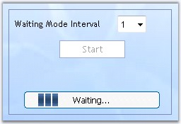

ProgressBar control can be used in waiting mode to indicate the users of the time that is taken before the initiated process is loaded.
1. In the design view, set the ProgressStyle property to WaitingMode.
2. In the html view of the project, add the following sample code snippet.
|
[script]
function PerformLongOp(button) { document.getElementById('Button1').disabled=true;
document.getElementById("Progressbar1").style.visibility=""; _sfCallbackMultiplexer1.callback("PeformLongOperation", true); // Set the value and update the progress before starting the timer. // This helps when you are repeating the above callback multiple times. _sfProgressBar1.value=0; _sfProgressBar1.updateProgress(); _sfProgressBar1.startProgressTimer(); }
function ChangeFrequency() { var frequency=document.getElementById("frequency").value; _sfProgressBar1.waitingfrequency=frequency; }
function display() { _sfProgressBar1.stopWaitingMode(); document.getElementById("Progressbar1").style.visibility="hidden"; document.getElementById('Button1').disabled=false; }
function changevisibility() { document.getElementById("Progressbar1").style.visibility="hidden"; } |
|
[aspx]
<table> <tr> <td style="width: 267px"><b>Waiting Mode Interval:</b>
<select id="frequency" OnChange="ChangeFrequency()"> <option value="1">1</option> <option value="10">10</option> <option value="25">25</option> <option value="50">50</option> </select><br/><br/>
<input id="Button1" type="button" value="Start" OnClick="PerformLongOp(this)" style="width: 93px"/> </td> </tr> </table><br/>
<ssw:CallbackMultiplexer ID = "CallbackMultiplexer1" runat = "server" OnCallback = "CallbackMultiplexer1_Callback"/> <cc1:progressbar id = "ProgressBar1" runat = "server" OnUpdateProgress = "ProgressBar1_UpdateProgress1" width = "205px" ProgressStyle = "WaitingMode" BackgroundCss = "BackgroundStyle" height = "33px" WaitingImageUrl = "images/progress8.gif" ProgressCss = "ProgressStyle" WaitingInterval = "1" WaitingBarWidth = "33"> </cc1:progressbar> |
3. The custom styles that are applied to the control.
|
[style sheet]
.BackgroundStyle { background-image:url('images/progressframe.ico'); } .ProgressStyle { padding-left:4px; padding-top:6px; padding-right:5px } |
4. Add the following sample code snippet as code behind file.
|
[C#]
protectedvoid ProgressBar1_UpdateProgress1(object sender, EventArgs e) { this.ProgressBar1.ProgressPercentage = this.Progress; }
protected void CallbackMultiplexer1_Callback(object sender, Syncfusion.Web.UI.WebControls.CallbackEventArgs e) { this.Progress = 0; while (true) { // Simulating a long operation, by making this thread to sleep for 1sec. System.Threading.Thread.Sleep(1000); this.Progress += 10;
if (this.Progress >= 100) break; }
this.Progress = 100; this.CallbackMultiplexer1.AfterCallbackResponseProcessedScript = "display()"; }
protected void Page_Init(object sender, EventArgs e) { if (this.IsPostBack == false) this.Progress = 0; }
// Here we keep track of the progress of the long operation. public int Progress { get { if (this.Application.Contents["MyProgress"] == null) this.Application.Contents["MyProgress"] = 0; return (int)this.Application.Contents["MyProgress"]; } set { this.Application.Contents["MyProgress"] = value; } } |
|
[VB]
Private Function ProgressBar1_UpdateProgress1(ByVal sender As Object, ByVal e As EventArgs) As protectedvoid Me.ProgressBar1.ProgressPercentage = Me.Progress End Function
Protected Sub CallbackMultiplexer1_Callback(ByVal sender As Object, ByVal e As Syncfusion.Web.UI.WebControls.CallbackEventArgs) Me.Progress = 0 Do While True ' Simulating a long operation, by making this thread to sleep for 1sec. System.Threading.Thread.Sleep(1000) Me.Progress += 10
If Me.Progress >= 100 Then Exit Do End If Loop
Me.Progress = 100 Me.CallbackMultiplexer1.AfterCallbackResponseProcessedScript = "display()" End Sub
Protected Sub Page_Init(ByVal sender As Object, ByVal e As EventArgs) If Me.IsPostBack = False Then Me.Progress = 0 End If End Sub
' Here we keep track of the progress of the long operation. Public Property Progress() As Integer Get If Me.Application.Contents("MyProgress") Is Nothing Then Me.Application.Contents("MyProgress") = 0 End If Return CInt(Me.Application.Contents("MyProgress")) End Get Set(ByVal value As Integer) Me.Application.Contents("MyProgress") = Value End Set End Property |
5. Build and run the application.

Figure 428: ProgressBar in WaitingMode